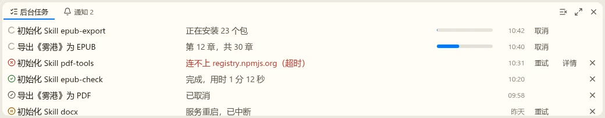
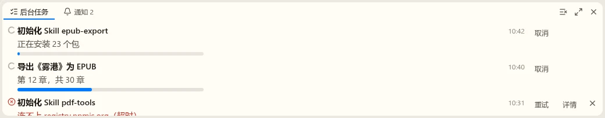
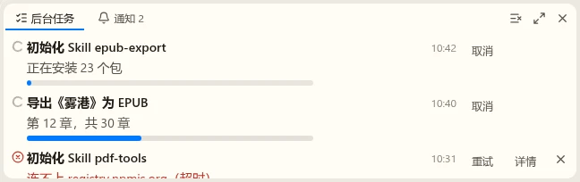

待定“后台任务”视图：一行一件，还是两行一件


每件一行，整个列表共用几列：图标、名字、状态、进度条、时间、按钮、移除。默认高度大约能看到 6 件。窄的时候名字和状态会截断，鼠标悬停可看全文；失败的完整原因在“详情”里。状态一列直接写原因或进展，不再重复图标已经表达的“没有成功”“已中断”，所以截断时最先看到的仍是要点。


名字和时间一行，状态一行，在跑的下面再加一条进度条。文字不截断，但默认高度只看得到两件半，要滚动或把面板拉高才看得全。
两种都一样的部分：在跑的在上、结束的在下，各自新的在前；能取消的有“取消”；失败的有“重试”和“详情”（安装输出），中断的有“重试”；结束的那一行能单独移除，在跑的不能；视图头有“清除已结束”。没有任务时显示一句说明：